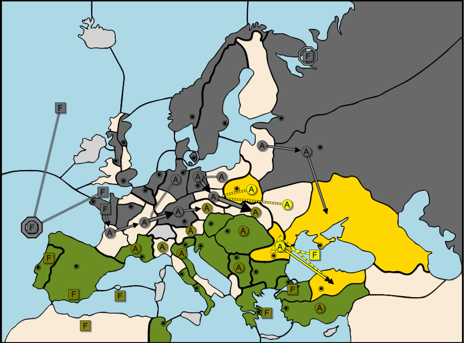
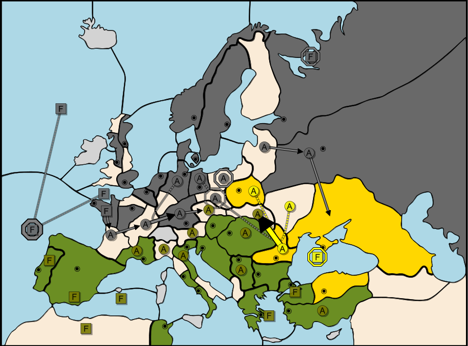

This answer was sent in to me by Christian Günther-Hanssen, and was so comprehensive and elegant I asked him if I could directly publish it as the solution. It’s reproduced here with his permission. I’ve added a few notes throughout, which are in italics.
The key to getting this draw is to get it before even the spring move is done.
It is possible to get Germany to agree to a 3-way draw right now, since if he does not you simply help Italy solo instead, even if Italy does not agree to a draw either. (In fall: Bla+Rum S Italian Arm-Sev. Con-Ank) This gives Germany no option but to agree to a draw right away. The same deal applies for Germany's spring moves. If they are not what Turkey asked for, the solo goes to Italy.
Italy is informed of this, so Italy knows Germany will follow the Turkish suggestion for moves. Italy is furthermore given an ultimatum. Either Italy agrees to the 3-way draw now, before spring moves even happen, or Turkey will do everything to create a German solo later. Draws will no longer be considered after spring moves, and Turkey will withdraw his vote as well.
If you’re questioning exactly why Christian is resorting to threats of throwing the game, it is because no stalemate lines exist against the position of the Italian player - if Turkey does not throw or threaten to throw here, Italy will eventually win the game.
Italy is also informed that one out of the following movesets will be chosen at random for Turkey+Germany. Italy will not know which one.
Here, Christian provides six different movesets. I’ve added some maps in as visual aids under each moveset.
Same for all movesets: Nao S Mao Eng S Mao Bre-Gas Gas-Bur Bur-Mun Kie S Bur-Mun Mun-Boh
Moveset A1: Sil-Gal Ber-Sil Pru S Ber-Sil Lvn-Mos Mos-Sev War S Sil-Gal Ukr S Sil-Gal Rum-Arm Bla C Rum-Arm
Moveset A2: Rum-Ank Bla C Rum-Ank
Moveset A3: Rum-Con Bla C Rum-Con

Moveset B: Sil-Gal Ber-Sil Pru S Ber-Sil Lvn-Mos Mos-Sev War S Sil-Gal Ukr S Sil-Gal Rum - Bul Bla S Rum-Bul
Moveset C: Sil-Gal Ber-Sil Pru S Ber-Sil Lvn-Mos Mos-Sev War S Sil-Gal Ukr S Rum Rum S Sil-Gal Bla S Rum
Moveset D: Sil S Rum-Gal Ber S Sil Pru H Lvn-Mos Mos-Sev War S Rum-Gal Ukr S Rum-Gal Rum - Gal Bla H
For all of these scenarios Germany also gets War and Sev in fall by Turkey giving them up, having promised to support a German solo. Germany's 18th center is not guaranteed, but neither can Italy guarantee that it won't fall. For Italy to make sure that Germany cannot win, Italy must all at the same time
There is no move where Italy can be sure to get all of these from the spring move, no matter which Moveset is happening. There are moves where Italy has a chance to get them all, but even if that is just a probability, that risk of a German solo is not worth the chance of getting a 2-way draw instead of a 3-way draw. Therefore, the only way Italy can make sure 100 % that Germany does not win is by accepting the draw before spring moves, before Turkey goes all in hunting for the chance of getting Germany to win.
This way the best option for all is to accept a draw. It's a bit messy, but it works out.
And there you have it - the Italian player is forced to draw, because if he does not, Germany almost certainly wins the game. Warsaw and Sevastopol take Germany up to 17, and the 18th center can be achieved either by supporting him into Rumania or convoying his unit from Sevastopol into another center adjacent to the Black Sea, while Moscow backfills Sevastopol. There’s a possibility that the Italian can block this if he guesses correctly, likely causing the Turk to be eliminated and the Italian to solo - but it’s incredibly risky. It’s reasonable to assume that instead of risking losing everything, Italy would take the draw.
Thanks again to Christian for his fantastic solution to the puzzle!
This is the Artillery Arms Pub in Islington, London. On March 28th, 2015, it hosted a Diplomacy game between 7 players from webdiplomacy.net, none of whom had met in person before and most of whom had never played a competitive face to face game.
Left to right: Tim Jones (Italy), Mikalis Kamaritis (Austria), Markus Zijlstra (Turkey), Sebastian Dinjens (Germany). The cubes are souvenirs from the event.
The Face to Face game was interesting, but not particularly remarkable in terms of tactics or strategy. An early I/T dominated the south, while the west suffered from unstable alliances and an interfering Russian - eventually, Italy stabbed Turkey, but Turkey retained a strong defensive position and the south came to a standstill while Germany managed to gather momentum in the north. It ended in a four-way draw in 1907, with Austria (Hellenic Riot), Russia (Mendax), and England (Mintyboy4) being eliminated simultaneously in the build phase - all remaining players agreed there was a considerable amount of play in the game, and Tim in particular did not want the draw to occur, but in the end all players agreed to end the game there and have a chat over some drinks about the result.
The story doesn’t end there, though.
A few weeks later, a continuation game was set up on webDiplomacy, which the four remaining players joined in order to find out how the game would have ended. This part of the game could have a whole additional article on it, as it is still to this day one of the most incredible games I’ve played, with alliances being incredibly fluid as both large players tried to manipulate the smaller powers into holding off the other, while trying to find opportunities to expand themselves without causing the small powers to throw the game the other way. However, that’s a story for another time - for this article, I’m going to skip to the very end, after the elimination of France (check_mate).
This is Spring, 1914. It is the position shown in the Youtube video.
In this phase, Turkey and Germany discussed the situation in detail and realised that there was no way to stop the Italian solo in the long run. This was when Turkey hatched a plan similar to that which Christian described in his solution - the only way this game would end in a draw was if Germany had a chance at soloing the game.
There was a slight difference between Christian’s solution and what actually happened though. In previous negotiations, Turkey had already used the threat of throwing the game, and had failed to follow through when the Italian had called his bluff, correctly guessing that the Turkish player would never throw the game if there was still the possibility of a better result. As such, a threat which included the phrase ‘draws will no longer be considered after spring moves’ would likely not have been taken seriously, so threatening Italy in this phase would have accomplished nothing. Turkey and Germany chose the moveset they believed to have the best chance of setting Germany up for a solo position (In Christian’s analysis, this is Moveset B) and played out the phase before contacting Italy.
Now, Turkey contacted Italy and threatened to throw the game. In this position, it is incredibly clear that the threat is serious, due to the fact that Turkey has abandoned his SCs in favour of letting Germany move in and through them.
The German solo isn’t certain here, but it’s a significant risk. There are a number of possible G/T movesets, from forcing Rumania with 3, to convoying Sevastopol across to Ankara or Bulgaria - and Italy cannot defend against them all. Instead of taking the risk of getting nothing from the game, the Italian player chose to draw, leaving the map as one of the very few examples out there of a logical draw without a stalemate line.
Congratulations to Peter McNamara, ‘gsmx’, and of course Christian Günther-Hanssen for sending in correct answers prior to this article being published. Thank you for reading, and I hope to bring you another puzzle in time for the next ‘zine!

|
Marcus Zijlstra [{Function}] (diplostrats@gmail.com) |
If you wish to e-mail feedback on this article to the author, and clicking
on the envelope above does not work for you, feel free to use the
Dear DP...
mail interface.